色の付いた枠のコードの、右上の「コピー」ボタンを押してください。コピーしたら、ブラウザーの「戻る」で PDF に戻れます。
アプリのデータは、データベース（PostgreSQL）に入っています。アプリが正しく動いているときは、データベースを直接さわる必要はありません。しかし、次のようなときには、自分でデータベースにログインして SQL を打つことになります。
この資料では、練習用のデータベースを作り、サンプルの SQL を1つずつ動かしながら覚えます。
webapp_prod）で練習してはいけません。この資料では、練習用に practice という別のデータベースを作り、最後に消します。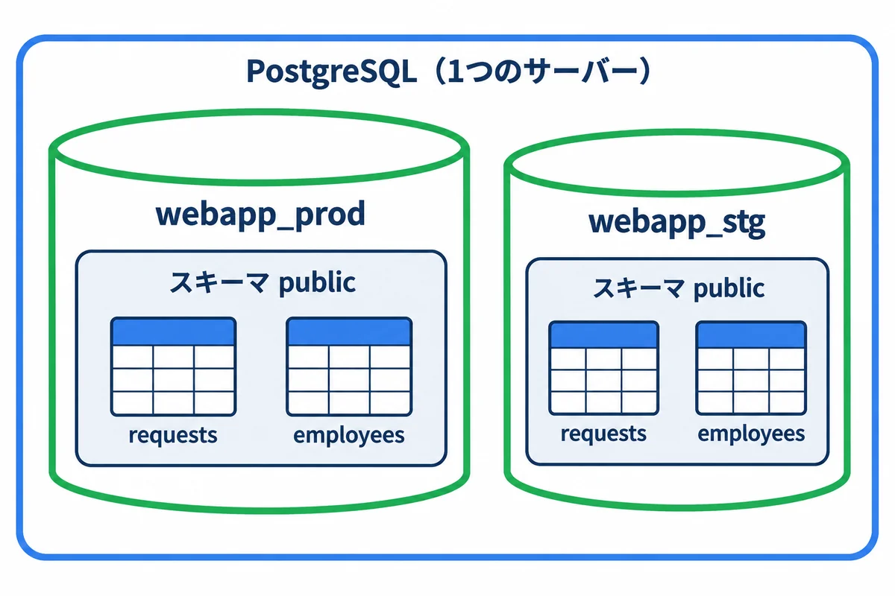
| 入れ物 | 説明 | 今回の例 |
|---|---|---|
| PostgreSQL（サーバー） | 1つのサービスとして動く、データベースの管理のプログラム。クラスターとも呼ぶ | postgresql-x64-18 のサービス |
| データベース | データのまとまり。データベースをまたいだ SQL は書けないので、本番と検証を分けるのに使う | webapp_prod、webapp_stg |
| スキーマ | データベースの中の、テーブルを入れる棚。何も決めなければ public という棚に入る |
public |
| テーブル | 表（00 基礎知識 7.1） | requests、employees |
| ロール | ログインする人やアプリ（9 章） | postgres、webapp_prod_app |
用語: スキーマ（schema：データベースの中で、テーブルを分けて入れる棚。今回は
publicだけを使う）
テーブルの列には、入れてよいデータの型を決めます。型が違うデータは入りません（例：日付の列に あした は入らない）。
| 型 | 入るもの | 例 |
|---|---|---|
integer・bigint |
整数（bigint は、とても大きな数まで） |
101、7 |
numeric(10,2) |
小数（お金など、誤差を出したくない数） | 1234.50 |
text・varchar(100) |
文字（varchar(100) は 100 文字まで） |
'治具の製作' |
boolean |
はい・いいえ | true、false |
date |
日付 | '2026-11-10' |
timestamptz |
日時（時間帯つき） | '2026-10-20 09:15+09' |
bytea |
バイナリ（画像などの、文字でないデータ） | 図面のデータなど |
jsonb |
JSON（入れ子になったデータ） | '{"width": 120}' |
文字は
'（シングルクォート）で囲みます。"（ダブルクォート）は、テーブルや列の名前を囲む記号で、意味が違います（14 章のトラブル）。
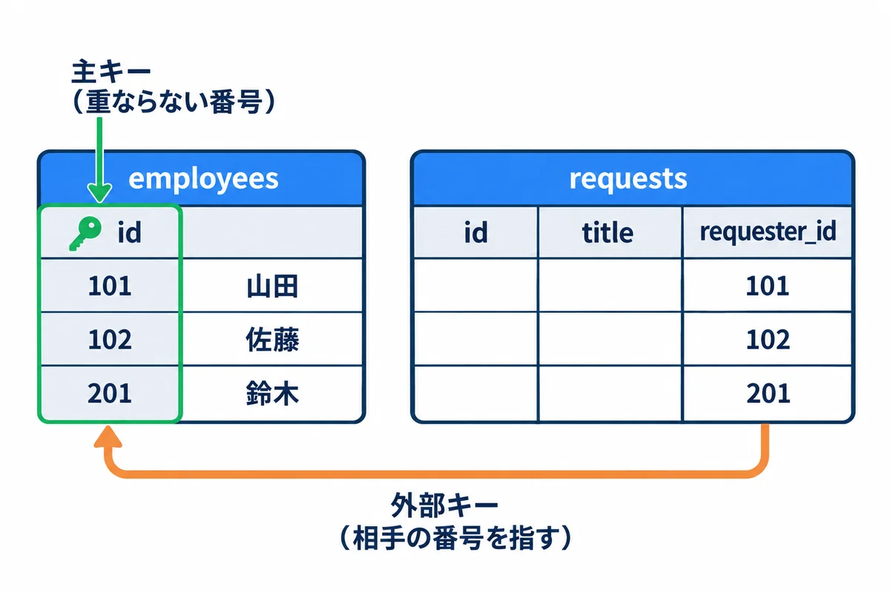
0 や空の文字（''）とは違います。用語: 主キー（primary key：1 行を見分ける、重ならない列）
用語: 外部キー（foreign key：ほかのテーブルの主キーを指す列。指す先が無い値は入れられない）
用語: 制約（constraint：「空は不可」「重複は不可」「この値だけ」など、テーブルに入れてよいデータの決まり）
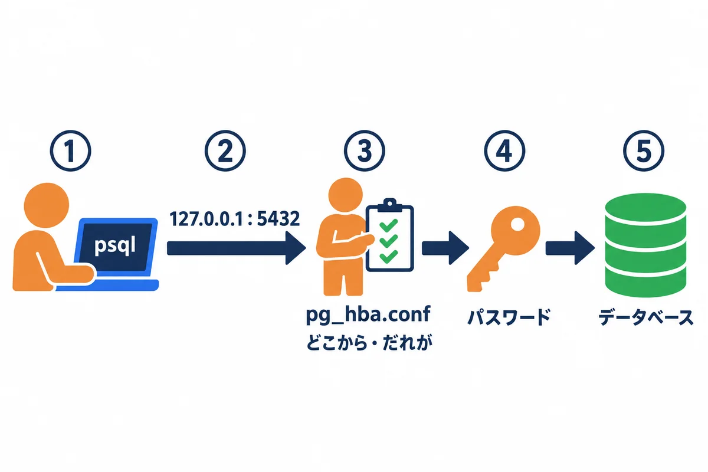
127.0.0.1 の 5432 番につなぐ。管理者の PowerShell で、psql の場所を教えてからつなぎます（04 の 5.4）。
# この窓の中だけ、psql の場所を教える
$env:Path += ";C:\Program Files\PostgreSQL\18\bin"
# スーパーユーザー postgres で、サーバーの中からつなぐ（パスワードを聞かれる）
psql -h 127.0.0.1 -p 5432 -U postgres -d postgres
| 指定 | 意味 | 省いたとき |
|---|---|---|
-h 127.0.0.1 |
どの機械の PostgreSQL か | Windows では localhost |
-p 5432 |
ポート | 5432 |
-U postgres |
だれとしてつなぐか（ロール） | Windows にログインしている名前（たいてい失敗する） |
-d postgres |
どのデータベースに入るか | -U と同じ名前 |
つながると、次のようなプロンプト（入力待ちの印）が出ます。
postgres=#
| プロンプト | 意味 |
|---|---|
postgres=# |
postgres データベースに、スーパーユーザーでつないでいる（# は強い権限の印） |
webapp_stg=> |
webapp_stg データベースに、ふつうのユーザーでつないでいる |
postgres-# |
SQL の途中（; をまだ打っていない）。続きを打つか、; を打つ |
postgres(# |
かっこが閉じていない |
SQL は
;（セミコロン）で終わります。;を打つまで、何行でも続きを打てます。Enter を押しても何も起きないときは、;を忘れています。
\（円記号）で始まるのは、SQL ではなく psql の道具のコマンドです。; は要りません。
| コマンド | 意味 |
|---|---|
\l |
データベースの一覧 |
\c webapp_stg |
別のデータベースに入り直す |
\dt |
今のデータベースのテーブルの一覧 |
\d requests |
テーブル requests の列・型・制約・索引 |
\du |
ロール（ユーザー）の一覧 |
\x |
結果を縦に並べて見る（列が多いときに便利）。もう一度打つと戻る |
\timing |
SQL にかかった時間を表示する |
\i D:\work\file.sql |
ファイルに書いた SQL を実行する |
\encoding |
今の文字コードを見る（14 章） |
\? |
psql のコマンドの一覧 |
\h SELECT |
SQL の書き方の説明（例：SELECT） |
\q |
psql を終わる |
結果が画面に入りきらないと、--続く-- と出て止まります。スペースキーで次へ、q で終わります。
決まった SQL を1つだけ動かすときは、-c を使います。
# アプリ用のユーザーで、今のユーザー・データベース・時刻を見る
psql -h 127.0.0.1 -U webapp_stg_app -d webapp_stg -c "SELECT current_user, current_database(), now();"
日本語を含む SQL は、
-cで渡さない方が安全です。 試した環境では、-cに日本語を書くと、文字コードの食い違いでinvalid byte sequence for encoding "UTF8"というエラーになりました。日本語を含む SQL は、psql の中で打つか、UTF-8 で保存した.sqlのファイルを-fで渡します（psql ... -f D:\work\check.sql）。
PostgreSQL のインストーラーで「pgAdmin 4」を入れていれば、画面で操作できます（スタートメニュー → pgAdmin 4）。
local、「Connection」の Host に 127.0.0.1、Port に 5432、Username に postgres を入れて保存します。注意: pgAdmin の表の画面では、セルを直接書きかえて保存できます。本番のデータを画面で直接書きかえないでください。 何を変えたかの記録が残らず、アプリの決まり（承認の順番など）を飛ばしてしまいます。直すときは、SQL を書き、検証で試してから、トランザクション（7 章）の中で行います。
スーパーユーザーでつないで、練習用のデータベースを作ります。
▶ 打つ所: 2.2 のとおり、PowerShell で psql -h 127.0.0.1 -U postgres と打ってつなぎ、postgres=# と出ている所に、下の SQL を 1 行ずつ打ちます（-- で始まる行は説明のメモなので、打たなくてよい）。\c practice のあとは、行の頭が practice=# に変わります。
-- 練習用のデータベースを作る
CREATE DATABASE practice ENCODING 'UTF8' TEMPLATE template0;
-- 作ったデータベースに入り直す
\c practice
次の SQL を、メモ帳に貼り付けて UTF-8 で D:\work\practice_setup.sql に保存し、psql の中で \i D:/work/practice_setup.sql と打って実行します（\i では、\ の代わりに / で書くと間違いが起きにくいです）。
-- 練習用のテーブルを作り、データを入れる（practice データベースの中で動かす）
-- 部署
CREATE TABLE departments (
id integer PRIMARY KEY, -- 部署の番号（主キー）
name text NOT NULL UNIQUE -- 部署の名前（空は不可・重複不可）
);
-- 社員
CREATE TABLE employees (
id integer PRIMARY KEY,
name text NOT NULL,
email text NOT NULL UNIQUE,
department_id integer NOT NULL REFERENCES departments (id), -- 外部キー: departments の id
is_active boolean NOT NULL DEFAULT true -- 在籍中か
);
-- 依頼
CREATE TABLE requests (
id bigint GENERATED ALWAYS AS IDENTITY PRIMARY KEY, -- 番号は自動で振る
title text NOT NULL,
status text NOT NULL DEFAULT '下書き'
CHECK (status IN ('下書き', '回覧中', '承認済み', '差し戻し')),
requester_id integer NOT NULL REFERENCES employees (id),
due_date date, -- 期限（空でもよい）
created_at timestamptz NOT NULL DEFAULT now()
);
INSERT INTO departments (id, name) VALUES
(1, '設計部'),
(2, '製造部'),
(3, '品質保証部'),
(4, '総務部');
INSERT INTO employees (id, name, email, department_id, is_active) VALUES
(101, '山田 太郎', 'taro.yamada@example.com', 1, true),
(102, '佐藤 花子', 'hanako.sato@example.com', 1, true),
(201, '鈴木 一郎', 'ichiro.suzuki@example.com', 2, true),
(202, '田中 次郎', 'jiro.tanaka@example.com', 2, false),
(301, '高橋 三郎', 'saburo.takahashi@example.com', 3, true);
INSERT INTO requests (title, status, requester_id, due_date, created_at) VALUES
('治具の製作', '回覧中', 101, '2026-11-10', '2026-10-20 09:15+09'),
('部品の追加工', '承認済み', 102, '2026-10-31', '2026-10-15 13:40+09'),
('試作品の溶接', '下書き', 201, NULL, '2026-10-28 10:05+09'),
('検査用の台の修理', '回覧中', 301, '2026-11-05', '2026-10-25 16:20+09'),
('棚の取り付け', '差し戻し', 101, '2026-11-20', '2026-10-27 11:00+09'),
('型の改造', '回覧中', 201, '2026-11-03', '2026-10-29 08:30+09');
| 書き方 | 意味 |
|---|---|
CREATE TABLE 名前 (列 型 制約, ...) |
テーブルを作る |
PRIMARY KEY |
主キー |
NOT NULL |
空（NULL）は不可 |
UNIQUE |
重複は不可 |
REFERENCES departments (id) |
外部キー（departments の id を指す） |
DEFAULT true・DEFAULT now() |
入れなかったときの値 |
CHECK (status IN (...)) |
この値だけ入れてよい |
GENERATED ALWAYS AS IDENTITY |
番号を自動で振る |
-- ... |
コメント（説明）。SQL としては無視される |
確かめること: \dt で departments・employees・requests の3つが出ること。\d requests で、列と制約（Check・外部キー）が出ること。
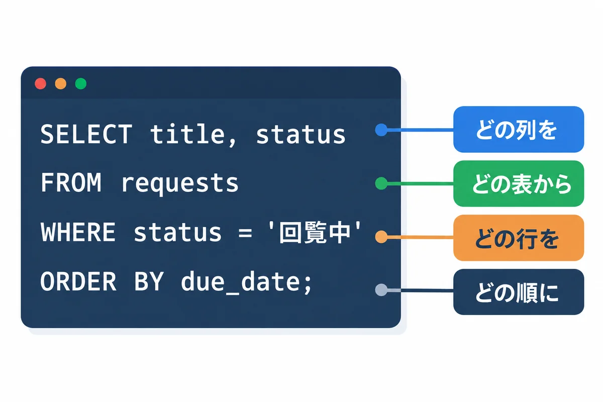
▶ 打つ所: この章からの SQL は、全部 practice=# と出ている所（3 章で \c practice したあと）に打ちます。1 つの SQL の終わりには ; を付け、Enter キーで実行します。psql を閉じてしまったら、psql -h 127.0.0.1 -U postgres -d practice で入り直します。
SELECT * FROM departments;
id | name
----+------------
1 | 設計部
2 | 製造部
3 | 品質保証部
4 | 総務部
(4 行)
* は「全部の列」です。本番の大きなテーブルで SELECT * を打つと、何万行も流れて止まらなくなるので、ふだんは列を選び、LIMIT で件数をしぼります。
SELECT id, title, status, due_date
FROM requests
WHERE status = '回覧中'
ORDER BY due_date;
id | title | status | due_date
----+------------------+--------+------------
6 | 型の改造 | 回覧中 | 2026-11-03
4 | 検査用の台の修理 | 回覧中 | 2026-11-05
1 | 治具の製作 | 回覧中 | 2026-11-10
(3 行)
条件は AND（かつ）・OR（または）でつなげます。
SELECT id, title, due_date
FROM requests
WHERE status = '回覧中'
AND due_date <= DATE '2026-11-05'
ORDER BY due_date;
id | title | due_date
----+------------------+------------
6 | 型の改造 | 2026-11-03
4 | 検査用の台の修理 | 2026-11-05
(2 行)
| 書き方 | 意味 | 例 |
|---|---|---|
=・<> |
等しい・等しくない | status = '回覧中' |
<・<=・>・>= |
より小さい・以下・より大きい・以上 | due_date <= DATE '2026-11-05' |
IN (...) |
どれかに当てはまる | status IN ('回覧中', '差し戻し') |
BETWEEN a AND b |
a 以上 b 以下 | id BETWEEN 100 AND 199 |
LIKE '%田%' |
文字の一部が合う（% は何文字でも） |
下の例 |
IS NULL・IS NOT NULL |
空である・空でない | 下の例 |
SELECT name, email
FROM employees
WHERE name LIKE '%田%';
name | email
-----------+-------------------------
山田 太郎 | taro.yamada@example.com
田中 次郎 | jiro.tanaka@example.com
(2 行)
SELECT id, title, status
FROM requests
WHERE due_date IS NULL;
id | title | status
----+--------------+--------
3 | 試作品の溶接 | 下書き
(1 行)
= NULLとは書きません。 NULL は「値が無い」ので、due_date = NULLは何にも当てはまらず、0 行になります。必ずIS NULLと書きます。
SELECT status, count(*) AS 件数
FROM requests
GROUP BY status
ORDER BY 件数 DESC, status;
status | 件数
----------+------
回覧中 | 3
下書き | 1
差し戻し | 1
承認済み | 1
(4 行)
| 書き方 | 意味 |
|---|---|
count(*) |
行の数 |
sum(列)・avg(列) |
合計・平均 |
min(列)・max(列) |
いちばん小さい・大きい値（日付なら、いちばん古い・新しい） |
GROUP BY 列 |
その列の値ごとにまとめる |
HAVING 条件 |
まとめた後でしぼる（例：HAVING count(*) >= 2） |
AS 件数 |
結果の列に名前を付ける |
DESC |
大きい順（新しい順）。ASC（小さい順）は省ける |
行が何万・何十万と増えると、WHERE で探すのに時間がかかるようになります。よく探す列に索引（インデックス）を作っておくと、本の後ろの索引のように、すぐに目当ての行へたどり着けます。
-- 「状態」と「期限」で探して並べることが多いので、2つの列の索引を作る
CREATE INDEX requests_status_due_idx ON requests (status, due_date);
-- PostgreSQL が、どうやって探すつもりか（計画）を見る
EXPLAIN SELECT id, title FROM requests WHERE status = '回覧中' ORDER BY due_date;
QUERY PLAN
---------------------------------------------------------------
Sort (cost=1.08..1.09 rows=1 width=44)
Sort Key: due_date
-> Seq Scan on requests (cost=0.00..1.07 rows=1 width=44)
Filter: (status = '回覧中'::text)
(4 行)
Seq Scan は「テーブルを頭から全部読む」という意味です。この練習のように行が少ないうちは、全部読む方が速いので、PostgreSQL は索引を使いません。行が増えると、索引を使う計画（Index Scan など）に自動で切りかわります。UNIQUE の列には、索引が自動で作られます。用語: 索引（インデックス。index：よく探す列について、行の場所を早く引けるようにした目録）
用語: EXPLAIN（エクスプレイン：SQL を、どうやって実行するつもりか（実行計画）を見る SQL）
依頼のテーブルには、依頼者の番号しか入っていません。名前や部署を一緒に見るには、テーブルを番号でつなぎます。
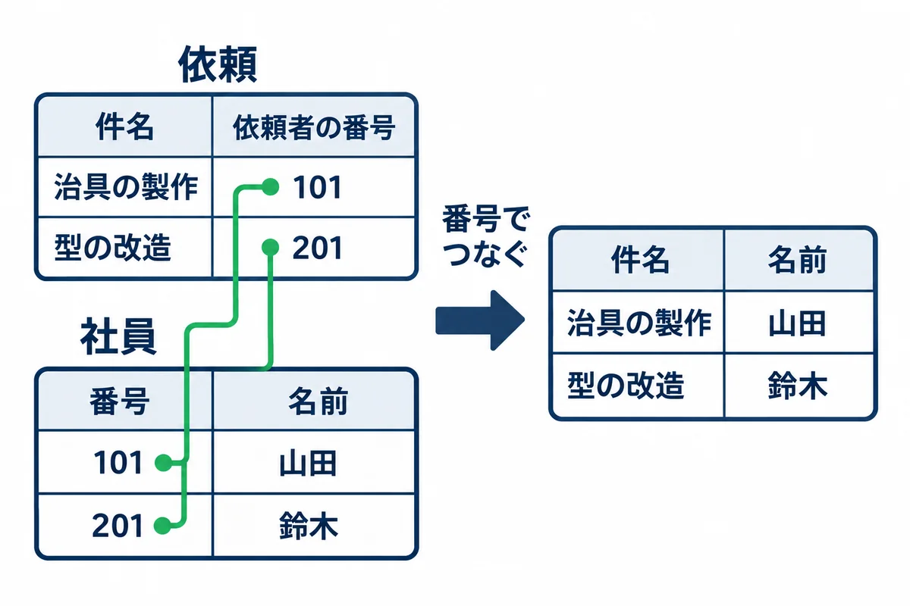
SELECT r.id, r.title, e.name AS 依頼者, d.name AS 部署
FROM requests AS r
JOIN employees AS e ON e.id = r.requester_id
JOIN departments AS d ON d.id = e.department_id
ORDER BY r.id;
id | title | 依頼者 | 部署
----+------------------+-----------+------------
1 | 治具の製作 | 山田 太郎 | 設計部
2 | 部品の追加工 | 佐藤 花子 | 設計部
3 | 試作品の溶接 | 鈴木 一郎 | 製造部
4 | 検査用の台の修理 | 高橋 三郎 | 品質保証部
5 | 棚の取り付け | 山田 太郎 | 設計部
6 | 型の改造 | 鈴木 一郎 | 製造部
(6 行)
requests AS r は、「requests を、この SQL の中では r と呼ぶ」という意味です。r.title は「r（requests）の title 列」です。ON e.id = r.requester_id が、「どの列とどの列が同じなら結ぶか」です。ふつうの JOIN は、相手が見つからない行を消します。「依頼が 0 件の部署も出したい」ときは、LEFT JOIN を使います。
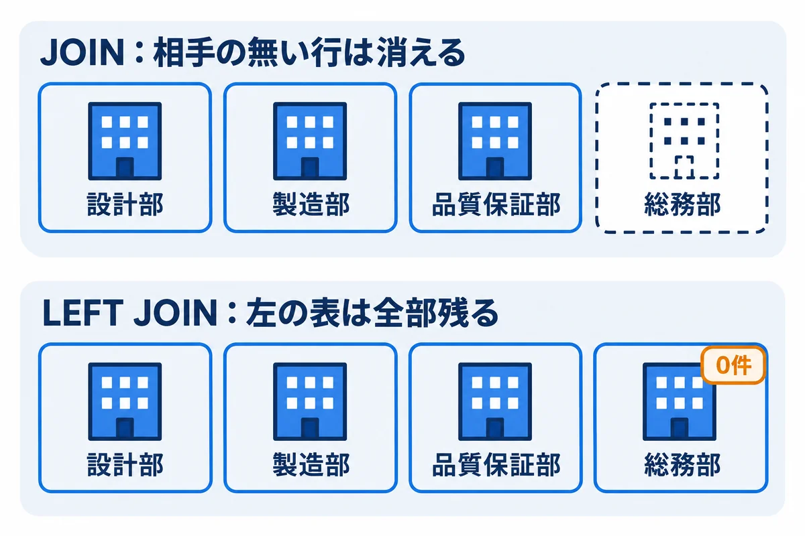
SELECT d.name AS 部署, count(r.id) AS 依頼の件数
FROM departments AS d
LEFT JOIN employees AS e ON e.department_id = d.id
LEFT JOIN requests AS r ON r.requester_id = e.id
GROUP BY d.id, d.name
ORDER BY d.id;
部署 | 依頼の件数
------------+------------
設計部 | 3
製造部 | 2
品質保証部 | 1
総務部 | 0
(4 行)
確かめること: 社員のいない「総務部」が、0 件として出ること。LEFT JOIN を JOIN に変えると、総務部の行が消えることも試してみてください。
INSERT INTO requests (title, requester_id, due_date)
VALUES ('工具箱の作成', 102, '2026-11-30')
RETURNING id, title, status, created_at;
id | title | status | created_at
----+--------------+--------+-------------------------------
7 | 工具箱の作成 | 下書き | 2026-11-01 21:23:50.806647+09
(1 行)
INSERT 0 1
status・created_at）には、DEFAULT の値（下書き・今の時刻）が入りました。created_at は、打った時刻になります。RETURNING を付けると、入れた行（自動で振られた番号など）をその場で見られます。INSERT 0 1 は、「1 行入れた」という意味です。UPDATE requests
SET status = '承認済み'
WHERE id = 1;
UPDATE 1
UPDATE 1 は、「1 行を直した」という意味です。この数が、思った数と同じかを必ず見ます。
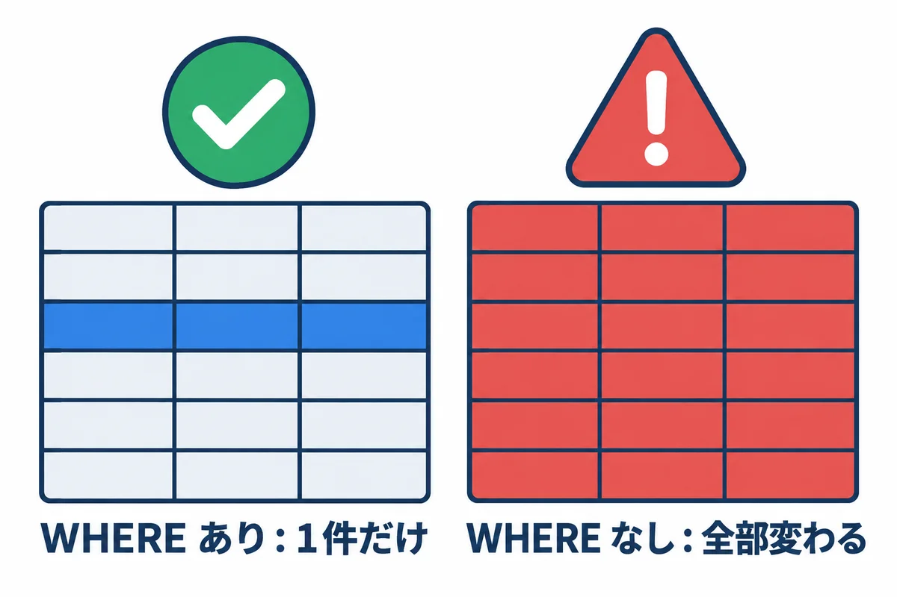
いちばん怖い間違い:
UPDATE・DELETEでWHEREを忘れると、テーブルの全部の行が変わる・消えます。本番で打つときは、必ず次の順で行います。
- 同じ
WHEREでSELECTを打ち、対象の行と件数を確かめる。BEGIN;を打ってから（7 章）、UPDATE・DELETEを打つ。- 出た件数が 1 と同じなら
COMMIT;、違えばROLLBACK;。
書き方の例です（練習では、ここではまだ打たないでください。7 章で、取り消せる形で試します）。
-- 番号 7 の依頼を消す
DELETE FROM requests WHERE id = 7;
消した行は、元に戻せません（7 章のトランザクションの中なら、ROLLBACK で戻せます）。
トランザクションは、いくつかの SQL を「全部やるか、全部やめるか」でまとめる仕組みです（00 基礎知識 7.3）。手で直すときの安全ネットにもなります。
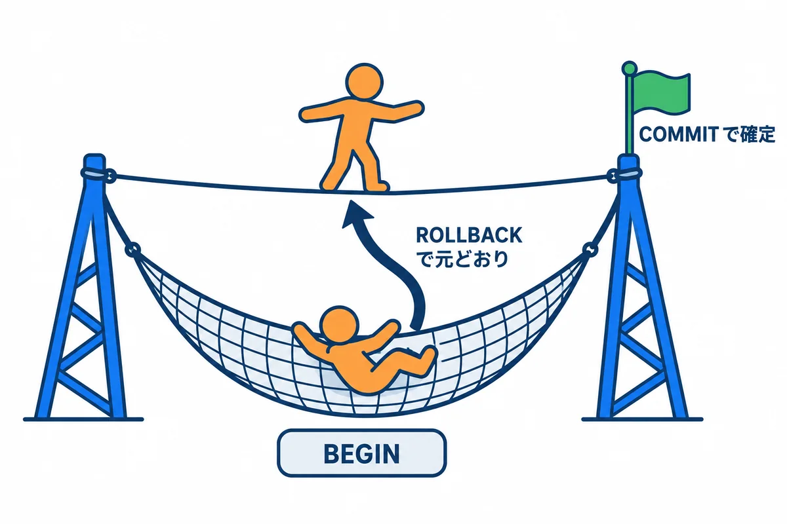
わざと WHERE を忘れて、全部消してみます。
BEGIN;
DELETE FROM requests;
SELECT count(*) FROM requests;
ROLLBACK;
SELECT count(*) FROM requests;
BEGIN
DELETE 7
count
-------
0
(1 行)
ROLLBACK
count
-------
7
(1 行)
DELETE 7 で全部の 7 行が消え、count は 0 になりました。ROLLBACK で取り消したので、最後の count は 7 に戻りました。ROLLBACK の代わりに COMMIT を打つと、確定して元に戻せなくなります。トランザクションの途中で、長く放っておかないでください。
BEGINしたまま止めていると、そのテーブルの行がほかの人（アプリ）から書きかえられなくなり、アプリの画面が固まることがあります。確かめたら、すぐにCOMMITかROLLBACKを打ちます。
テーブルの決まり（制約）に合わないデータは、エラーで止められます。エラーは、データを守ってくれた印です。英語のエラーの文の、最初の行（ERROR:）と次の行（DETAIL:）を読みます。
メッセージが英語なのは、 04 の 5.3 で
lc_messages = 'C'にしたためです（ログの文字化けを防ぐため）。
決まっていない値を入れた（CHECK 制約）
INSERT INTO requests (title, status, requester_id) VALUES ('テスト', '完了', 101);
ERROR: new row for relation "requests" violates check constraint "requests_status_check"
DETAIL: Failing row contains (8, テスト, 完了, 101, null, 2026-11-01 21:23:51.252143+09).
status に、決まっていない 完了 を入れようとしたので、止められました。
番号が飛ぶ: エラーで止められた行のために、自動の番号（ここでは
8）が使われています。次に入れる行は9になります。番号が飛ぶのは正しい動きで、故障ではありません。
存在しない相手を指した（外部キー）
INSERT INTO requests (title, requester_id) VALUES ('テスト', 999);
ERROR: insert or update on table "requests" violates foreign key constraint "requests_requester_id_fkey"
DETAIL: Key (requester_id)=(999) is not present in table "employees".
重複した（UNIQUE）
INSERT INTO employees (id, name, email, department_id)
VALUES (103, '山田 二郎', 'taro.yamada@example.com', 1);
ERROR: duplicate key value violates unique constraint "employees_email_key"
DETAIL: Key (email)=(taro.yamada@example.com) already exists.
ほかの行から指されている行を消そうとした（外部キー）
DELETE FROM departments WHERE id = 1;
ERROR: update or delete on table "departments" violates foreign key constraint "employees_department_id_fkey" on table "employees"
DETAIL: Key (id)=(1) is still referenced from table "employees".
テーブルの名前の打ち間違い
SELECT * FROM request;
ERROR: relation "request" does not exist
| エラーの文 | 意味 | 直し方 |
|---|---|---|
violates check constraint |
決まっていない値 | 入れてよい値を \d テーブル の Check で確かめる |
violates foreign key constraint ... is not present |
指す相手が無い | 先に相手（社員など）を入れる |
violates foreign key constraint ... is still referenced |
ほかから指されている | 指している行を先に直す。または消さずに「無効」の印にする |
duplicate key value violates unique constraint |
重複 | 既にある行を確かめる |
relation "..." does not exist |
テーブルが無い | 名前・データベース（\c）・スキーマを確かめる |
column "..." does not exist |
列が無い | \d テーブル で列の名前を確かめる |
syntax error at or near "..." |
書き方の間違い | "..." の所の直前を見る（, の抜け、' の閉じ忘れ） |
permission denied for table ... |
権限が無い | 9 章 |
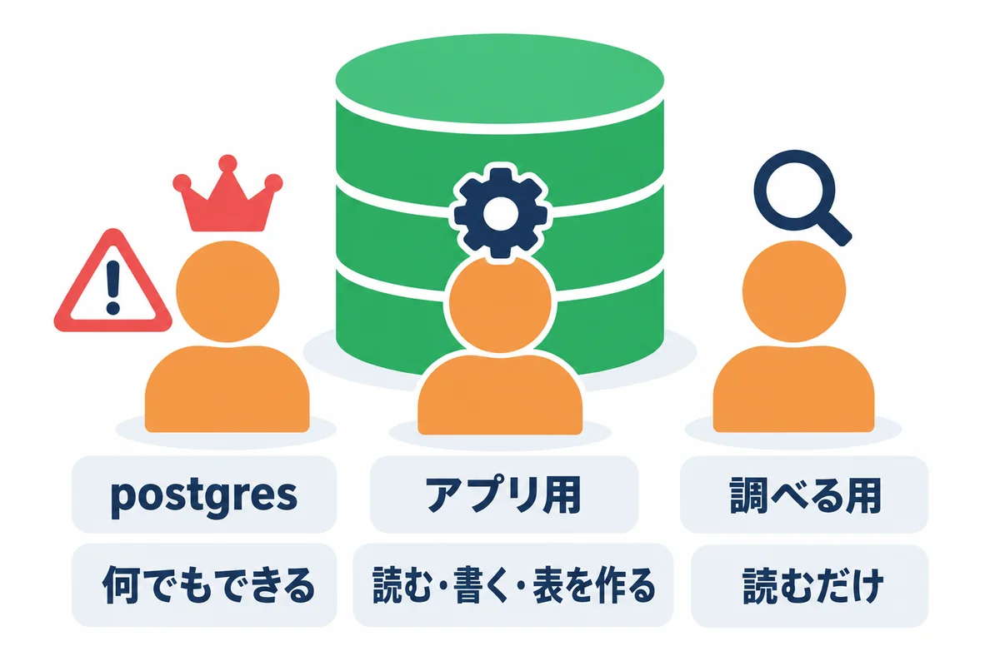
| ロール | 使う人 | できること |
|---|---|---|
postgres |
管理者（構築・バックアップ・リストア） | 何でも（スーパーユーザー）。ふだんの調べ物には使わない |
webapp_prod_app |
本番のアプリ | 自分のデータベース（webapp_prod）の読み書き・テーブルを作る |
webapp_readonly（作る） |
調べ物をする人 | 読むだけ |
調べ物で postgres や アプリ用のユーザーを使うと、うっかり UPDATE を打ったときに本当に変わってしまいます。読むだけのユーザーを作っておくと安全です。
-- postgres でつないで打つ
CREATE ROLE webapp_readonly LOGIN;
\password webapp_readonly
-- 本番のデータベースにつなぐことを許す（04 の 5.5 で、全員から取り上げてあるため）
GRANT CONNECT ON DATABASE webapp_prod TO webapp_readonly;
-- 本番のデータベースに入り直して、テーブルを読む許可を出す
\c webapp_prod
GRANT USAGE ON SCHEMA public TO webapp_readonly;
GRANT SELECT ON ALL TABLES IN SCHEMA public TO webapp_readonly;
-- これからアプリ（webapp_prod_app）が作るテーブルも、読めるようにしておく
ALTER DEFAULT PRIVILEGES FOR ROLE webapp_prod_app IN SCHEMA public
GRANT SELECT ON TABLES TO webapp_readonly;
| 書き方 | 意味 |
|---|---|
GRANT 権限 ON 物 TO ロール |
権限を渡す |
REVOKE 権限 ON 物 FROM ロール |
権限を取り上げる |
GRANT SELECT ON ALL TABLES IN SCHEMA public |
今ある全部のテーブルを読める |
ALTER DEFAULT PRIVILEGES FOR ROLE webapp_prod_app ... |
これから webapp_prod_app が作るテーブルにも、同じ権限を付ける |
確かめること: 練習用のデータベースで同じことをして、読むだけのユーザーでつなぎ、SELECT はでき、UPDATE は ERROR: permission denied for table requests で止められること（試した結果、そうなりました）。
ALTER DEFAULT PRIVILEGESのFOR ROLEを忘れると、 アプリが新しい版でテーブルを足したときに、読むだけのユーザーからそのテーブルが読めなくなります。テーブルを作るのはアプリ用のユーザーなので、そのユーザーをFOR ROLEに書きます。
PostgreSQL の設定ファイルは、データの場所（04 では D:\pgsql\18\data）にあります。
| ファイル | 中身 | 変えたら |
|---|---|---|
postgresql.conf |
待ち受ける住所・ポート・メモリ・ログ・時間帯など | 多くは再読み込みで効く。listen_addresses・port などは再起動が要る |
pg_hba.conf |
だれが・どこから・どの方法でつなげるか（門番） | 再読み込みで効く |
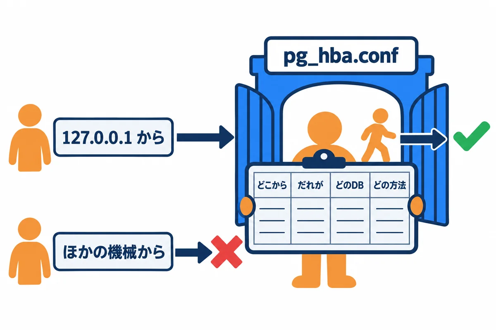
1行が1つの決まりで、上から順に見て、最初に当てはまった行が使われます。
# TYPE DATABASE USER ADDRESS METHOD
host all all 127.0.0.1/32 scram-sha-256
host all all ::1/128 scram-sha-256
| 列 | 意味 | この例 |
|---|---|---|
| TYPE | つなぎ方（host は TCP の通信） |
host |
| DATABASE | どのデータベースに | all（全部） |
| USER | どのロールが | all（全部） |
| ADDRESS | どこから | 127.0.0.1/32（このサーバー自身だけ） |
| METHOD | どうやって確かめるか | scram-sha-256（パスワード。安全な方式） |
今回は、データベースをサーバーの中からしか使わないので、127.0.0.1 と ::1 の行だけにします。0.0.0.0/0（どこからでも）や trust（パスワード無し）の行は書きません。
-- 今の設定の値を見る
SHOW listen_addresses;
SHOW lc_messages;
SHOW timezone;
-- どの設定ファイルを読んでいるか
SHOW config_file;
SHOW hba_file;
-- 設定ファイルを読み直す（再起動しなくてよい設定だけ効く）
SELECT pg_reload_conf();
再起動が要る設定は、PowerShell で Restart-Service postgresql-x64-18 を打ちます（アプリが一時的にエラーになるので、使われていない時間に）。
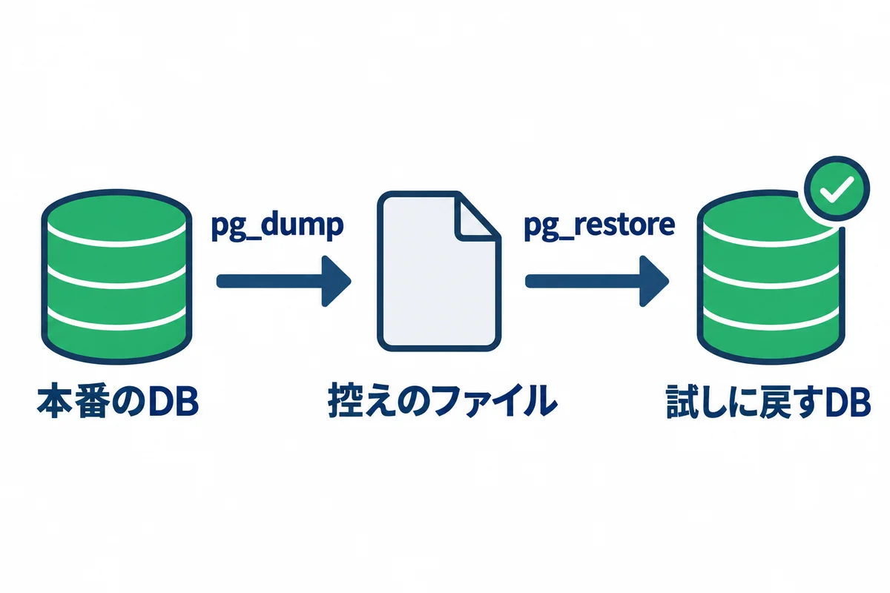
# practice データベースを、PostgreSQL 独自の形式（-Fc）で 1 つのファイルに書き出す
pg_dump -h 127.0.0.1 -U postgres -Fc -f D:\work\practice.dump practice
| 指定 | 意味 |
|---|---|
-Fc |
PostgreSQL 独自の形式（縮めてあり、後で一部だけ戻すこともできる） |
-f ファイル |
書き出す先 |
最後の practice |
控えを取るデータベース |
pg_dump には入りません。ロールも控えたいときは、pg_dumpall -h 127.0.0.1 -U postgres --roles-only -f D:\work\roles.sql を使います（パスワードの暗号の形が入るので、ファイルの置き場所に気を付けます）。本番のデータベースに直接戻さず、まず別の名前のデータベースに戻して確かめます。
# 戻す先の、空のデータベースを作る
psql -h 127.0.0.1 -U postgres -c "CREATE DATABASE practice_restore ENCODING 'UTF8' TEMPLATE template0;"
# 控えのファイルから戻す
pg_restore -h 127.0.0.1 -U postgres -d practice_restore D:\work\practice.dump
# 中身を確かめる（件数が、控えを取ったときと同じか）
psql -h 127.0.0.1 -U postgres -d practice_restore -c "SELECT count(*) FROM requests;"
# 控えのファイルの中身の目録を見る（テーブルのデータが入っているか）
pg_restore --list D:\work\practice.dump
確かめること: pg_restore がエラー無しで終わること。count が、控えを取る前の件数と同じであること（練習では 7。試した結果、そうなりました）。
本番の毎晩のバックアップと、戻す練習の手順は、04 の 11 章にあります。
-- データベースごとの大きさ
SELECT datname, pg_size_pretty(pg_database_size(datname)) AS 大きさ
FROM pg_database
ORDER BY pg_database_size(datname) DESC;
-- 大きいテーブルの上から 10 個（今のデータベースの中で。索引を含む）
SELECT relname AS テーブル, pg_size_pretty(pg_total_relation_size(relid)) AS 大きさ
FROM pg_statio_user_tables
ORDER BY pg_total_relation_size(relid) DESC
LIMIT 10;
-- 今つないでいる人と、している事
SELECT pid, datname, usename, client_addr, state, now() - query_start AS 経過, left(query, 60) AS SQL
FROM pg_stat_activity
WHERE datname IS NOT NULL
ORDER BY query_start;
-- 5 分以上かかっている SQL
SELECT pid, usename, now() - query_start AS 経過, left(query, 80) AS SQL
FROM pg_stat_activity
WHERE state = 'active' AND now() - query_start > interval '5 minutes';
確かめること:
pg_stat_activity の state が idle in transaction のまま、経過 が長い行が無いこと（7 章の「BEGIN したまま」）。止まらない SQL を止めるときは、次のようにします（pid は上の結果の番号）。
-- SQL だけを取り消す（つないだままにする）。まずこちらを試す
SELECT pg_cancel_backend(12345);
-- つないでいるのを切る（アプリのつなぎが切れることがあるので、最後の手段）
SELECT pg_terminate_backend(12345);
用語: VACUUM（バキューム：消したり直したりした行の、使われなくなった場所を片付ける PostgreSQL の仕組み。ふつうは自動（autovacuum）で動くので、自分で打つ必要はない）
-- postgres データベースに移ってから消す（自分が入っているデータベースは消せない）
\c postgres
DROP DATABASE practice;
DROP DATABASE practice_restore;
DROP DATABASEは、データベースを丸ごと消し、元に戻せません。 打つ前に、名前がpracticeであること（webapp_prodでないこと）を、声に出して確かめるくらいの気持ちで見ます。
| 症状（エラーの文） | 考えられる原因 | 調べ方・直し方 |
|---|---|---|
connection refused・Connection refused |
PostgreSQL が止まっている／ポートが違う | Get-Service postgresql-x64-18。止まっていれば Start-Service。始まらなければ、データの場所の log フォルダのログを見る |
password authentication failed for user "..." |
パスワードの間違い／ユーザー名の間違い | -U の名前を確かめる。パスワードを忘れたら、postgres でつないで \password ユーザー名 で付け直す |
no pg_hba.conf entry for host "..." |
門番のチェック表に、その組み合わせが無い | -h 127.0.0.1 でつないでいるか。pg_hba.conf（10.1）を確かめる |
database "..." does not exist |
データベースの名前の間違い | \l で一覧を見る |
permission denied for database ... |
そのデータベースへの CONNECT の権限が無い | 9.1 の GRANT CONNECT |
permission denied for table ... |
そのテーブルを読む・書く権限が無い | 9.1 の GRANT SELECT と ALTER DEFAULT PRIVILEGES |
relation "..." does not exist、でもテーブルはある |
別のデータベースに入っている／名前に大文字や " |
SELECT current_database();。"Requests" のように " で作ったテーブルは、" で囲まないと見つからない |
too many clients already |
つなぎすぎ（決まりは 100 まで） | 12 章の pg_stat_activity で、だれが多くつないでいるか見る。アプリのつなぎ方の設定を確かめる |
could not extend file・No space left on device |
ディスクがいっぱい | 01 の 8 章のコマンドで空きを見る。古いバックアップ・ログを消す |
| 日本語が化ける（psql の画面） | 画面の文字コードと、psql の文字コードの食い違い | PowerShell で chcp の番号を見て、psql の中で \encoding を見る。932 なら \encoding SJIS、65001 なら \encoding UTF8 にそろえる。PGCLIENTENCODING は自分で決めない |
| ログのファイルの一部が化ける | 日本語のメッセージで、UTF-8 と Shift_JIS が混ざっている | postgresql.conf の lc_messages = 'C'（04 の 5.3） |
-c で日本語を渡すと invalid byte sequence for encoding "UTF8" |
引数の文字コードの食い違い | 日本語を含む SQL は、UTF-8 のファイルにして -f で渡す（2.4） |
| アプリの画面が固まる・保存が終わらない | だれかが BEGIN したまま止まっている（ロック） |
12 章の idle in transaction を探し、本人に確かめてから pg_cancel_backend／pg_terminate_backend |
00 基礎知識 7.5 のとおり、会社の決まりで SQL Server を使うこともあります。SQL の基本（SELECT・WHERE・JOIN・GROUP BY・BEGIN）は同じですが、次の所が違います。
| やりたいこと | PostgreSQL | SQL Server |
|---|---|---|
| 先頭の 10 件 | ... LIMIT 10 |
SELECT TOP 10 ... |
| 番号を自動で振る | GENERATED ALWAYS AS IDENTITY |
IDENTITY(1,1) |
| 文字をつなぐ | 'a' \|\| 'b' |
'a' + 'b' |
| 今の日時 | now() |
SYSDATETIMEOFFSET() |
| 日本語の文字の型 | text |
nvarchar(...)（N'日本語' と書く） |
| トランザクション | BEGIN; ... COMMIT; |
BEGIN TRANSACTION; ... COMMIT; |
| 文字の道具 | psql |
sqlcmd |
| 画面の道具 | pgAdmin | SQL Server Management Studio（SSMS） |
| 控え | pg_dump・pg_restore |
BACKUP DATABASE・RESTORE DATABASE |
| 用語 | 短い説明 | 章 |
|---|---|---|
| BEGIN・COMMIT・ROLLBACK | トランザクションの始まり・確定・取り消し | 7 |
| CHECK・UNIQUE・NOT NULL | 入れてよい値・重複不可・空は不可の制約 | 1・3 |
| DELETE | 行を消す SQL | 6 |
| GRANT・REVOKE | 権限を渡す・取り上げる | 9 |
| GROUP BY・count | 値ごとにまとめる・数える | 4 |
| INSERT | 行を入れる SQL | 6 |
| JOIN・LEFT JOIN | テーブルをつなぐ・左を全部残してつなぐ | 5 |
| NULL | 値が無いという印 | 1・4 |
| pg_dump・pg_restore | 控えを取る・戻す道具 | 11 |
| pg_hba.conf | だれがどこからつなげるかの門番の表 | 10 |
| pg_stat_activity | 今つないでいる人と SQL の一覧 | 12 |
| pgAdmin | PostgreSQL の画面の道具 | 2 |
| psql | PostgreSQL の文字の道具 | 2 |
| SELECT・WHERE・ORDER BY | 見る・しぼる・並べる SQL | 4 |
| UPDATE | 行を直す SQL | 6 |
| VACUUM | 使われなくなった場所の片付け | 12 |
| 外部キー・主キー | 相手を指す列・1 行を見分ける列 | 1 |
| 型 | 列に入れてよいデータの種類 | 1 |
| スキーマ | データベースの中の、テーブルの棚 | 1 |
| 制約 | 入れてよいデータの決まり | 1・8 |
| プロンプト | psql の入力待ちの印（postgres=#） |
2 |
| ロール | PostgreSQL のユーザー・グループ | 9 |